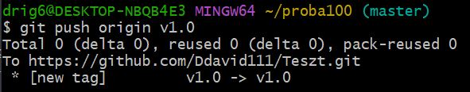
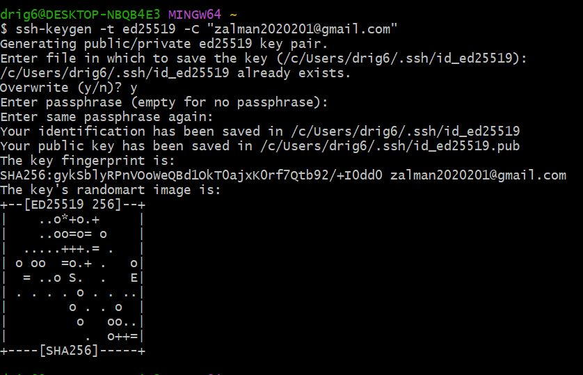
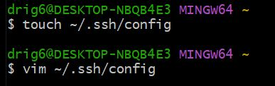
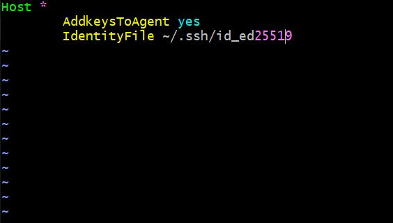

1.hét
Technikai dokumentáció
Összehasonlítás Markup (jelölő nyelvekről), például MarkDown, reStructuredText
Markdown és Sphinx előnyei és hátrányai:
Markdown előnyei |
Markdown hátrányai |
|---|---|
Egyszerűbb és könnyebb nyelv a megtanulásához és használatához |
Korlátozottabb formázási lehetőségek vannak a RST-hez képest |
Könnyen olvasható és írható intuitív szintaxisa van |
Nincsenek beépített támogatások speciális elemekhez például táblázatokhoz vagy bonyolultabb struktúrákhoz |
Széles körben támogatott és használt a weben és más platformokon |
Előfordulhat hogy hiányoznak specifikus funkciók vagy kiterjesztések amelyeket más jelölőnyelvek például RST vagy HTML támogatnak |
A Markdown dokumentumok egyszerűen átalakíthatók HTML-re vagy más formátumokra |
|
Kevesebb szintaktikai elemet használ így kevesebb figyelmet kell fordítani a formázás részleteire |
reStructuredText (RST) előnyei |
reStructuredText (RST) hátrányai |
|---|---|
Széles körű támogatást és integrációt kínál a Sphinx dokumentációs rendszerrel amely erőteljes dokumentáció-generálási eszközkészlet |
Bonyolultabb és részletesebb szintaxissal rendelkezik amelynek elsajátítása időbe telhet |
Gazdagabb formázási lehetőségeket és szintaktikai elemeket kínál a Markdownhoz képest például táblázatok kereszthivatkozások direktívák stb |
Kisebb mértékű támogatása és elterjedtsége lehet más platformokon és eszközökben a Markdownhoz képest |
Támogatja a bonyolultabb dokumentumstruktúrákat amelyek nagyobb projektek vagy komplexebb tartalmak esetén hasznosak lehetnek |
A formázás részleteire jobban oda kell figyelni ami időigényesebb lehet |
Az RST dokumentumok átalakíthatók más formátumokba például HTML PDF vagy LaTeX |
További alternatívák vizsgálata.
További alternatíva vizsgálatának a LaTeX nyelvet választottam. Felelevenítettem a tudásomat, amit előző félévben tanultunk.
Áttekintés az elvégzett vizsgálatokról MS Word docx (vagy LibreOffice Writer odt) formátumban.
Git
Alapvető fogalmak és működés áttekintése.
Alapparancsok
cd: mappákba lépés, navigálás
mkdir: mappa létrehozása
cd ..: adott mapából visszalépés
pwd: útvonal (ösvény)
ls: mappa tartalmának listázása
clear: tiszta üres felület
whoami: felhasználónév megjelenítése
git help: súgó megjelenítése
touch demo.txt: demo szöveges álomány létrehozása
Gittel kapcsolatos alapparancsok
git init: inicializálja a git repositoryt
git status: aktuális könyvtár állapota
git add <fájlnév>: adott fájl hozzáadása
git add . : több fájl hozzáadása
git commit -m “First Commit”: változtatások rögzítése opcionálisan üzenettel is
git remote add origin <távoli repository URL-je>: létrehozza a kapcsolatot a helyi és a távoli repository között, és lehetővé teszi a közöttük lévő adatok cseréjét és szinkronizálását
git remote set-url origin <távoli repository URL-je>: ezzel a parancsal megváltoztathatjuk a távoli repository URL-jét, ha például szeretnénk másik távoli repositoryra mutatni
git remote -v: a távoli repository-kat és azok URL-jeit jeleníti meg a helyi repositoryban
git push origin master: a helyi master branch tartalmának feltöltésére (push-olására) használhatunk a távoli origin repositoryba
git pull –rebase origin master: ez a parancs letölti a legújabb változtatásokat a távoli origin repositoryból, majd átrendezve alkalmazza a helyi változtatásokra.
Haladó témakörök: branch-elés, merge, tagging, rebase
Branch-elés
A branchelés a Git egyik alapvető funkciója, amely lehetővé teszi az elkülönült fejlesztési ágak létrehozását a projektben. A branchek segítségével különböző változtatásokat végezhetünk az adott ágon anélkül, hogy befolyásolnánk a többi ág fejlesztését.
Lépései
Új branch létrehozása:
git branch <branchnév>
Átváltás a branchre:
git checkout <branchnév>
Branchek listázása:
git branch(Az aktuális branchet a “*”-al jelölik.)
Pusholás:
git push origin new
Eredmény:
Merge
Különböző branchek összeolvasztására használjuk.
A merge folyamata során a Git automatikusan összefűzi (integrálja) a két különböző branch változtatásait, és létrehoz egy új commitot, amely a változtatásokat tartalmazza.
git merge <branchnév>
Tagging
Amely lehetővé teszi az adott commitok vagy verziók megjelölését a repositoryban.
A tag egy nevet vagy azonosítót ad a commitnak, hogy könnyen hivatkozhassunk rá később.
git tag <tagnév>
Eredmény:
Rebase
A rebase folyamata során a Git lehetővé teszi a commitok átrendezését és az ágak összefűzését
git rebase <branchnév>
SSH kulcsok generálása (ssh-keygen, ssh-agent)
Az SSH-kulcsok (Secure Shell keys) a Secure Shell (SSH) protokollhoz kapcsolódó kriptográfiai kulcsok, amelyeket azonosításra és az adatok biztonságos titkosítására használnak a számítógépes hálózatokban.
Az SSH-kulcsoknak két komponense van: a privát kulcs (private key) és a publikus kulcs (public key).
Privát kulcs: Ez a titkos kulcs, amelyet csak a kulcspárhoz tartozó személy vagy entitás ismer. A privát kulcs fontos biztonsági elem, és biztonságosan kell tárolni. Ezt a kulcsot használja a felhasználó az azonosításra a távoli számítógépen vagy szerveren.
Publikus kulcs: Ez a kulcs a privát kulcspárral párosítva van. A publikus kulcs szabadon megosztható, és a távoli szerveren tárolódik. Amikor egy felhasználó csatlakozik egy szerverhez, a publikus kulcsot használja az azonosításhoz. A szerver ellenőrzi, hogy a publikus kulcs megfelel-e a tárolt kulcshoz, és ha igen, engedélyezi a hozzáférést.
Lépései
Nyissuk meg a Git Bash-t.
Gépeljük be a következő parancsot:
ssh-keygen -t ed25519 -C "your_email@example.com"
A “your_email@example.com” helyére írjuk be a saját e-mail címünket.
Az
eval "$(ssh-agent -s)"parancs az ssh-agent indítására szolgál a Git Bash-ben. Az ssh-agent egy program, amely kezeli és tárolja a privát SSH-kulcsokat, és hozzáférést biztosít nekik a hitelesítés során.
eval "$(ssh-agent -s)"
Létrehozunk egy üres fájlt a .ssh mappában és szerkesztjük azt.
touch ~/.ssh/config
vim ~/.ssh/config
Host *
AddkeysToAgent yes
IdentityFile ~/.ssh/id_ed25519
Ez a konfiguráció azt eredményezi, hogy az SSH-kulcsok automatikusan hozzáadódnak az ssh-agent-hez, amikor azokat használjuk a Git Bash-ben. Ez megkönnyíti az SSH-kulcsok kezelését és az azonosítás folyamatát, mivel nem kell újra megadni a jelszót minden egyes Git művelet során, amely az SSH-kulcsokat igényli. Az IdentityFile beállítás pedig meghatározza az Ed25519 privát kulcs fájl elérési útvonalát és nevét az ~/.ssh/id_ed25519-en keresztül.
 Az
ssh-add ~/.ssh/id_ed25519parancsot használhatjuk a Git Bash-ben az Ed25519 privát kulcs hozzáadásához az ssh-agent-hez. Az ssh-add parancs segítségével hozzáadhatjuk a privát kulcsot az ssh-agent-hez, hogy az a kulcs felhasználható legyen az azonosításhoz.
ssh-add ~/.ssh/id_ed25519
Nyissuk meg a Githubot és készítsünk egy új ssh kulcsot. A
cat ~/.ssh/id_ed25519.pubparancsot használhatjuk a Git Bash-ben az Ed25519 publikus kulcs tartalmának megjelenítéséhez. Az id_ed25519.pub fájl a publikus kulcs fájlja, amelyet generáltunk az Ed25519 kulcspárhoz.
cat ~/.ssh/id_ed25519.pub
Repository klónozás. Githubon az egyik repository-nál válasszuk ki az ssh fült és másoljuk ki a szöveget, majd a megfelelő paranccsal hajtsuk végre a klónozást.
git clone <repository ssh hivatkozása>
Könyvek, linkek átnézése